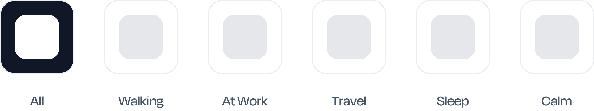
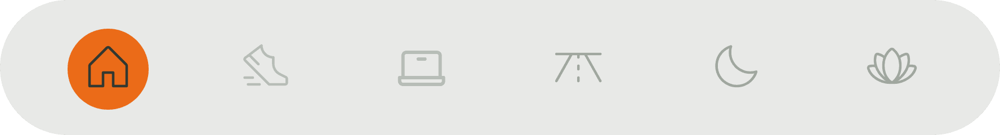
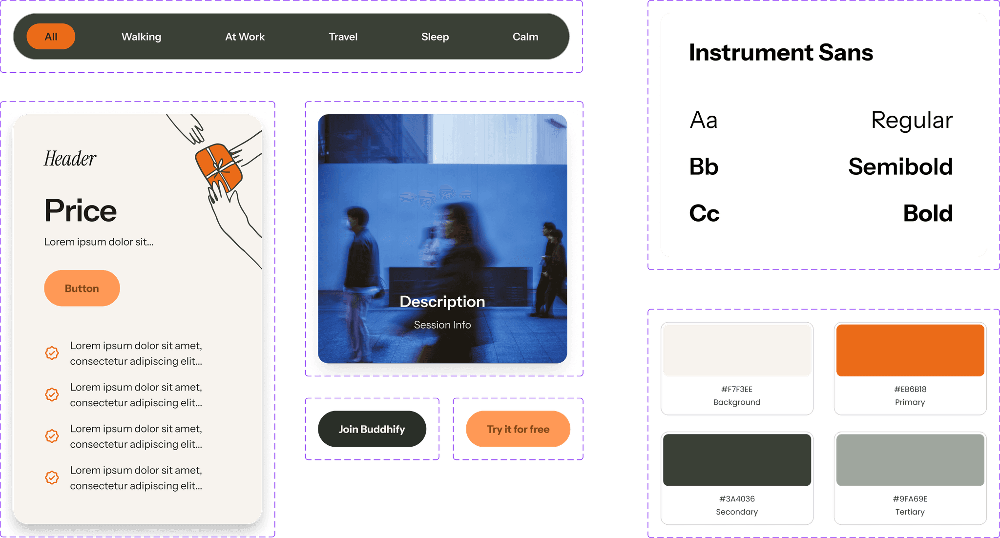

Contesto
Prima di disegnare, volevo capire
Buddhify propone meditazioni da ascoltare mentre cammini, durante una pausa o quando hai bisogno di fermarti un momento. Non serve necessariamente seguire una routine: puoi scegliere una pratica in base a quello che stai facendo o a come ti senti.
Prima di iniziare il redesign, ho preparato una survey per capire come le persone si orientano nei siti dedicati alla meditazione e cosa cercano quando li visitano.
Volevo confrontare le mie impressioni sul sito con le risposte di altre persone, prima di decidere cosa cambiare.
Problema
Quando trovare qualcosa richiede troppi passaggi
Esplorando il sito e analizzando le risposte al questionario, ho individuato alcuni aspetti da migliorare.
Navigazione - L'header conteneva diversi collegamenti e non era immediato capire da dove iniziare.
Contenuti & Accesso - Le informazioni sui contenuti disponibili e sulle modalità di accesso potevano essere presentate in modo più chiaro.
Meditation Wheel - La ruota delle meditazioni era facilmente riconoscibile, ma richiedeva un po' di esplorazione per capire come utilizzarla.
Prova gratuita - Non era subito chiaro se fosse possibile provare il servizio prima di acquistarlo.
Mi sono concentrata soprattutto sulla navigazione e sul modo in cui venivano presentati i contenuti. Volevo rendere il sito più facile da esplorare, anche per chi non conosceva già Buddhify.
Soluzione
Pensavo di dover aggiungere. Invece ho tolto.
Dalla survey è emerso che il 68% delle persone coinvolte utilizzava già siti simili. Tra le esigenze raccolte c'era anche quella di arrivare velocemente ai contenuti, senza passare da troppe spiegazioni.
Nelle prime bozze avevo aggiunto sezioni e riquadri, pensando di rendere il sito più completo. Riguardando le schermate, però, mi sono accorta che c'erano troppi elementi a contendersi l'attenzione.
Ho quindi iniziato a semplificare: meno riquadri, una navigazione più chiara e più spazio alle informazioni importanti.
Iterazione e affinamento
La prima idea non mi convinceva
Per esplorare le categorie di meditazione avevo inizialmente disegnato una serie di filtri, ognuno all'interno di una piccola scheda.
Quando li ho messi insieme, però, il risultato non mi convinceva. Le schede occupavano molto spazio e, invece di semplificare la navigazione, aggiungevano altri elementi da leggere.
Ho provato allora una soluzione diversa.
In Figma ho sostituito le schede con una tab bar più compatta, usando icone e una struttura più familiare.
Le categorie rimanevano a disposizione, ma senza occupare troppo spazio nella schermata.
È stato uno dei passaggi più utili del progetto: una soluzione che sembrava funzionare nelle prime bozze, una volta inserita nell'interfaccia, aveva bisogno di essere ripensata.


Design System
Mettere insieme tutti i pezzi
Dopo aver definito le schermate, ho lavorato sugli elementi che si ripetevano nel sito.
Per i colori ho scelto toni chiari, verde scuro e arancione. Volevo mantenere un'atmosfera tranquilla, usando l'arancione per far risaltare le azioni principali.
Ho utilizzato Instrument Sans per i testi e organizzato pulsanti, schede e altri elementi ricorrenti in componenti Figma.
Avere questi elementi a disposizione mi ha aiutata a mantenere le schermate coerenti e a modificare più facilmente quello che non funzionava.

Non tutto quello che aggiungi serve davvero
La parte più interessante di questo progetto è stata imparare a mettere in discussione le mie prime idee.
Mi sono resa conto che una soluzione può sembrarmi giusta nelle prime bozze, ma funzionare meno bene quando la vedo inserita nell'interfaccia.
È qualcosa che voglio portare anche nei prossimi progetti: riguardare le mie scelte con attenzione ed essere pronta a cambiarle quando serve.